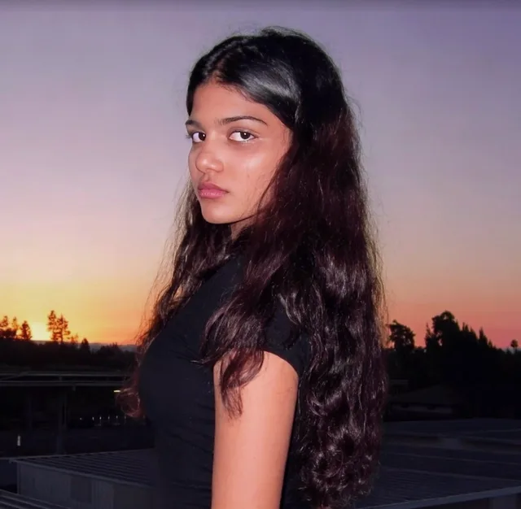
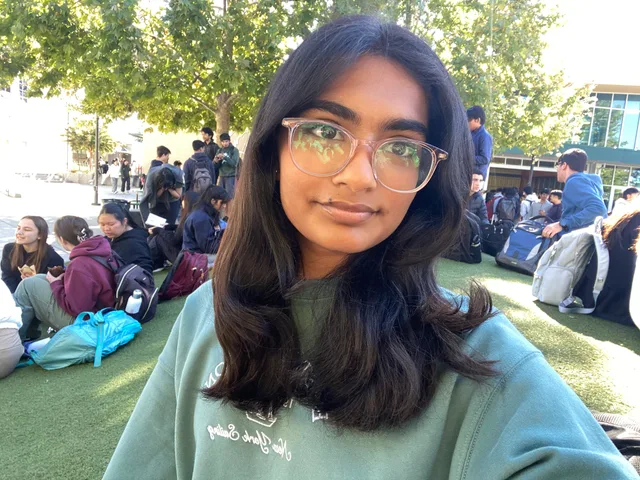
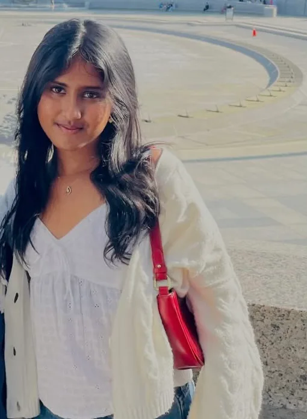

Aarya Patel
Co-founder
Our story · Est. Summer 2025
At the hackathons we went to, there were almost no other girls in the room. We kept noticing it. In Summer 2025, we started Code4Cause.
01 / The spark
At the hackathons we went to, there were almost no other girls in the room. That was the starting point for Code4Cause: wanting more girls to have a place in computer science.
02 / Our first program
We launched GreenSight to prove that middle schoolers could do real data science on a local problem. They started with zero coding experience. Over four weeks, they learned Python, data analysis, and machine learning, then wrote a research paper on the best places to plant trees in the Bay Area. They shared it with local city council members.
03 / A clearer focus
After GreenSight, we refocused on girls in tech. We wanted to help girls build technical skills and confidence, and see a path into computer science careers. Code4Cause grew to 100+ chapters in 8+ countries.
That focus also led us to work with Roya Mahboob, Natalie Brunell, and Speed Wallet to help women in Afghanistan set up Bitcoin and USDT wallets. It was part of a larger effort that has reached thousands of women, giving them a way to receive income through online education work.
The people who started it
We’re Aarya, Risha, and Sanvi. We founded Code4Cause together in Summer 2025.

Co-founder

Co-founder

Co-founder
Be part of the conversation
Interested in Code4Cause as a student, parent, school, or supporter? Write to us about chapters, our work, or ways to get involved.